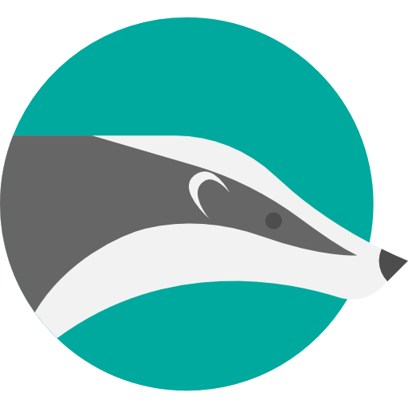

A tutorial for 2 users to learn the basics of git and version control.Un tutoriel pour 2 utilisateurs destiné à apprendre les rudiments de git et du versionnage d'un projet.
Avant de commencer ...Before we start...
Avant de commencer ce tutoriel, deux utilisateurs doivent être identifiés.Before we start, please name two users.
Deux utilisateurs sont nécessaires pour suivre ce tutoriel...Two users must be identified in order to proceed with the tutorial...
{{userA}} et {{userB}} travaillent sur un même projet.{{userA}} and {{userB}} are collaborating on a project.
Configuration initialeSet-up
La première étape consiste à créer un compte sur GitHub pour {{userA}} et {{userB}} en se rendant à l'adresse https://github.comThe first step consists in {{userA}} and {{userB}} signing up to an account on GitHub at the following address https://github.com
Ensuite, {{userA}} crée un nouveau projet Eclipse et y importe les sources du projet à télécharger en cliquant ici : tuto_git.zip Then, {{userA}} creates a new Java project on Eclipse and imports the sources that can be downloaded here:tuto_git.zip
{{userA}} vérifie que le projet compile et se lance normalement.{{userA}} checks that the project compiles and runs successfully.
Création du dépôt et synchronisation sur GitHubCreating a repository and push on GitHub
En utilisant un terminal, {{userA}} se rend dans le répertoire du projet et initialise un dépôt local Git.Using a terminal, {{userA}} navigates to the project directory and initialises a new git local repository.
git init
Un message dans la console confirme l'initialialisation du répertoire courant comme dépôt Git.A message in the terminal confirms that an empty git repository has been initialised in the current directory.
Il faut désormais indiquer à Git quel(s) fichier(s) ou répertoire doivent être exclus du versionnement. Pour cela, {{userA}} ajoute un fichier .gitignore.The next step consists in telling git which file(s) should be excluded from versionning. To that end, {{userA}} creates a new text file .gitignore.
touch .gitignore
{{userA}} édite le fichier avec un éditeur de texte et ajoute les patterns à ignorer, en l'occurrence les fichiers compilés et les paramètres personnels d'Eclipse.{{userA}} edits the file with a text editor and adds the following patterns (compiled bytecode and personnal Eclipse parameters).
/bin/
/.settings/
{{UserA}} enregistre le fichier et quitte.{{userA}} saves and quits.
{{userA}} ajoute ensuite les fichiers à versionner dans l'index du dépôt.{{userA}} adds all the files/directories to be tracked to the repository index.
git add -A
{{userA}} vérifie que tous les fichiers du projet sauf les fichiers ignorés ont été mise dans l'index.{{userA}} checks that all the project files were successfully added to the index, except those ignored. In the git terminolgy, these files are now staged.
git status
{{userA}} valide ces ajouts dans une première révision.{{userA}} commits these changes within a first revision.
git commit -m "première version du projet"
Cette révision est désormais enregistrée dans le dépôt local. Pour la synchroniser avec un dépôt distant, il faut d'abord en créer un nouveau sur GitHub.The revision is acknowledged by git, and receives a hash (the equivalent of a revision number). This revision is now the head of the local repository.
{{UserA}} vérifie le changement de status des fichiers validés{{userA}} checks again the status of the local repository.
git status
Comme la validation vient d'être réalisée, il n'y a pas de différences entre la copie locale et la révision de tête. Dans la terminologie git, la copie de travail est propre. Puisqu'il contient désormais une révision, le dépôt local peut être synchronisé avec un dépôt distant.For now, there are no differences between the working copy and the head revision. In the git terminology, the working copy is clean. Since it has now a head revision, the local repository may be synced to a remote repository.
La prochaine étape consiste à créer un dépôt en ligne sur GitHub.The first step is to create a new repository online on GitHub.
Sur GitHub, {{userA}} crée un nouveau projet, par exemple avec le nom tutorielGit et récupère son adresseOn GitHub, {{userA}} registers a new project, for instance uding the name tutorielGit and copy its address.
{{userA}} référence ensuite localement ce dépôt comme dépôt distant associé à ce projet.{{userA}} adds the remote repository to the local repository.
{{UserA}} pousse sa révision sur le dépôt distant.{{UserA}} pushes the revision onto the remote repository.
git push origin master
La console affiche un message validant l'envoie de cette révision. Sur GitHub, dans le projet tutorielGit, la version apparaît également, ainsi que l'identité de l'utilisateur qui l'a poussée sur le serveur.The terminal displays a confirmation that the revision was successfully pushed online. On GitHub, in the project tutorielGit, the revisions is now listed along with the identity of the user who pushed it.
Ajout des collaborateursAdding collaborators
{{userA}} enregistre {{userB}} comme collaborateur dans le projet sur GitHub.{{userA}} registers {{userB}} as a collaborator of the project on GitHub.
{{userB}} se rend dans son workspace Eclipse et récupère une copie du projet à partir de GitHub{{userB}} navigates to its Eclipse workspace directory and clones the project from GitHub
Une fois le projet téléchargé, {{userB}} l'importe dans Eclipse en utilisant le menu Once cloned, the project can be imported from Eclipse using the menu FileImport...GeneralExisting projects into workspace
{{userB}} vérifie que le projet compile et s'exécute correctement sur sa machine.{{userB}} checks that the project compiles and runs.
Bravo {{userA}} et {{userB}} !Congratulations {{userA}} and {{userB}}!
Vous avez atteint une première étape dans la collaboration. Vous savez partager un projet.You've reached a first step of collaboration: you've learned how to share a project.
Workflow simple (de type SVN)Simple workflow (SVN-type)
Dans Eclipse, {{userB}} modifie le projet en ajoutant la possibilité de quitter l'application au clic sur l'icône de la fenêtre.In Eclipse, {{userB}} adds to the project a functionality to quit the application on clicking on the icon of the window.
{{userB}} ajoute cette nouvelle modification dans l'index de son dépôt.{{userB}} stages this modification in the local repository index.
git add src/tuto_git/Application.java
{{userB}} valide cette modification dans une nouvelle révision.{{userB}} commits this modification in a new revision.
git commit -m "ajout: sortie de l'app à la fermeture de la fenêtre"
Enfin, {{userB}} synchronise cette nouvelle révision avec le dépôt distantFinally, {{userB}} syncs this new revision with the remote repository.
git push origin master
{{userA}} s'informe de l'état de son dépôt local relativement à la version de tête sur le dépôt distant.Meanwhile, {{userA}} checks for any new revision on the remote repository.
git fetch
{{userA}} constate que le projet a progressé. Il synchronise son dépôt local avec la nouvelle révision sur le dépôt distant.{{userA}} is informed that the project has progressed and the local revision is behind the revision on GitHub. {{userA}} pulls the head revision onto the local repository.
git pull origin master
Git informe {{userA}} que le projet peut être mis à jour localement en "avance rapide", Cela signifie qu'il y a un chemin direct de modifications du code entre sa version locale et la tête sur le dépôt distant.Git informs {{userA}} that the project locally can be updated fast-forwardly. That means there is a straight path of modifications from the local revision to the new head on GitHub.
La nouvelle révision est téléchargée et remplace la précédente. {{userA}} et {{userB}} sont désormais en phase.The new revision is downloaded and replaces the former head. {{userA}} and {{userB}} are now on sync.
Bravo {{userA}} et {{userB}} !Congratulations {{userA}} and {{userB}}!
Vous avez atteint une deuxième étape dans la collaboration. Vous savez collaborer sur un projet en suivant une progression synchrone.You have now reached a second step of collaboration: you've learned how to collaborate in a project following a synchronous progression. But git has a lot more to offer! Let's carry on the training.
Restauration locale d'un ou plusieurs fichiersLocal recovery of one or several files
Dans Eclipse, {{userA}} modifie le projet pour le rendre invalide en supprimant une ligne ou une bloc de code dans la classe Application.In Eclipse, {{userA}} changes one or several lines in the Application class so as to make the code invalid.
{{userA}} constate les modifications entre son fichier et la version enregistrée dans l'index.{{userA}} checks the differences between the working copy and head revision.
git diff
{{userA}} récupère la version sauvegardée de son fichier à partir de son dépôt local{{userA}} restores the modified file from the local repository.
git checkout src/tuto_git/Application
Dans Eclipse, {{userA}} vérifie que le fichier a bien été restauré à partir de la dernière révision.In Eclipse, {{userA}} checks the code has been reverted to its former version.
Travail collaboratif sans conflitCollaborative work without conflicts
{{userA}} introduit une nouvelle modification sur le projet en ajoutant dans la classe Application l'instruction setLocationRelativeTo(null) permettant de centrer la fenêtre par rapport à l'écran.{{userA}} introduces a new change in the project by adding into the class Application the following instruction setLocationRelativeTo(null) that allows to center the application window relative to the screen.
En parallèle {{userB}} introduit une nouvelle modification sur le projet en modifiant la taille du bouton dans la classe Vue à 120*120 pixels.Meanwhile, {{userB}} also introduces another change on the project by modifying the size of the button in the class Vue to 120*120 pixels.
{{userA}} et {{userB}} valident tous les deux localement leur modification{{userA}} and {{userB}} both commit their changes.
Pour {{userA}} :{{userA}}:
git add src/tuto_git/Application.java
git commit -m "ajout du centrage de la fenêtre"
Pour {{userB}} :{{userB}}:
git add src/tuto_git/Vue.java
git commit -m "modification de la taille du bouton"
D'abord, {{userA}} pousse sa révision sur GitHub.First, {{userA}} pushes his/her revision on GitHub.
git push origin master
Ensuite, {{userB}} pousse sa révision sur GitHub.Then, {{userB}} pushes his/her revision on GitHub.
git push origin master
L'envoi est rejeté par le serveur !The revision is rejected by the remote repository!
{{userA}} et {{userB}} ont fait progresser le projet chacun de leur côté en parallèle. Le projet a divergé : ils sont chacun sur une branche différente. Il est nécessaire de fusionner ces branches divergentes pour retrouver l'unicité du projet.{{userA}} and {{userB}} have moved the project forward individually. The project has therefore diverged: each user is actually working now on a separate branch. These diverging branches need to be merged.
{{userB}} récupère la dernière révision depuis le serveur{{userB}} pulls the last revision from the remote repository.
git pull origin master
Lorsque la récupération s'est effectuée, la fusion entre les deux branches se fait de manière automatique car aucun conflit n'est détecté. En effet, les modifications ont été effectuées à des endroits différents dans le code.Once the remote head revision on GitHub is downloaded, the local and remote revisions are merged seamlessly, since no conflict has been detected. Indeed, the project was modified by the users on different locations in the code.
{{userB}} peut désormais pousser sa révision sur le serveur, car elle intègre désormais les modifications faites en parallèle par {{userA}}.{{userB}} now detains the most foward revision since it includes the changes of {{userA}}. This revision must be pushed onto the remote repository.
{{userA}} est désormais en retard sur la tête du projet et doit penser à récupérer la dernière révision à partir du dépôt distant.{{userA}} must remember he/she is now behind the head revision of the project and therefore he/she will need to pull from the remote repository.
git push origin master
Bravo {{userA}} et {{userB}} !Congratulations {{userA}} and {{userB}}!
Vous avez atteint une troisième étape dans la collaboration. Les développements de branches parallèles sont quasi impossible à empêcher lorsque plusieurs personnes travaillent sur un même projet. Vous avez appris à résoudre une fusion simple, lorsqu'aucun conflit n'apparaît.you've reached a third step of collaboration. Branching the project to develop separate features in parallel is something that is hardly avoidable in a project. You've learned how to cope with a simple merge, where changes are not colliding with one another.
Gestion de conflitConflict resolution
{{userA}} et {{userB}} modifient en parallèle la classe Application en ajoutant un titre différent à la fenêtre avec la méthode setTitle.{{userA}} and {{userB}} make modifications in parallel to the class Application by setting the window title to a different value using the method setTitle.
{{userA}} et {{userB}} valident tous les deux localement leur modification{{userA}} and {{userB}} both commit their changes locally.
git add src/tuto_git/Application.java
git commit -m "ajout d'un titre à la fenêtre"
D'abord, {{userB}} pousse sa révision sur GitHub.First, {{userB}} pushes his/her revision onto GitHub.
git push origin master
Ensuite, {{userA}} pousse sa révision sur GitHub.Then, {{userA}} pushes his/her revision on GitHub.
git push origin master
L'envoi est à nouveau rejeté par le serveur !The revision is rejected by the remote repository!
Comme précédemment, {{userA}} et {{userB}} ont fait diverger le projet et il faut désormais fusionner leurs modifications.As before, the project has diverged into two separate branches which must now be merged.
{{userA}} récupère la dernière révision à partir du serveur.{{userA}} pulls the latest revision from the remote repository.
git pull origin master
Un conflit est détecté !A conflict is detected!
Les fichiers en conflit ont été modifiés par Git et attendent une résolution manuelle de la part de l'utilisateur.Unlike in the previous step, the modifications are colocated and therefore git is unable to merge the branches automatically and will rely on the user to do so. The conflict(s) is/are pointed out by git inside the conflicting files.
{{userA}} s'informe des conflits{{userA}} finds out more about the conflict(s) and identifies the files where an action is required.
git diff
Dans l'éditeur d'Eclipse, {{userA}} résoud le conflit directement dans le code en "nettoyant" les marqueurs laissés par Git.In Eclipse, {{userA}} solves the conflict(s) by manually and directly modifying the code and cleaning the conflict marker(s).
Ensuite, {{userA}} peut versionner cette nouvelle révision et la pousser sur GitHub.Then, {{userA}} is allowed to commit this new revision and push it onto the remote repository.
git add src/tuto_git/Application.java
git commit -m "Conflit résolu sur le titre de la fenêtre
git push origin master
{{userA}} vérifie sur GitHub que la dernière révision est la sienne.{{userA}} checks on GitHub that the head revision is now his/her revision.
{{userB}} récupère la dernière révision qui inclus la résolution du conflit.{{userB}} pulls the head revision (which includes the resolution of the conflict) from the remote repository.
git pull origin master
Bravo {{userA}} et {{userB}} !Congratulations {{userA}} and {{userB}}!
Vous avez atteint une quatrième étape dans la collaboration. Vous savez désormais résoudre un conflit sans paniquer, lorsque deux collaborateurs ont apporté des modifications dans le(s) même(s) fichier(s).You've reached an important milestone in this training: You've learned how to solve a conflict without panicking!

Ce tutoriel est terminé !you have completed this tutorial!
Vous avez terminé ce tutoriel et vous êtes maintenant capable de collaborer sur un projet en utilisant un outil puissant et incontournable. Cependant, Git est un outil très complexe et le maîtriser vous demandera de nombreuses années d'expérience !You have successfully completed this tutorial and you've upgraded to the rank of badger. Congratulations! The git badger is apt for productive collaboration with git. However, remeber git is a complex tool and many years of experience will be required before mastering every one of its features and subtleties!